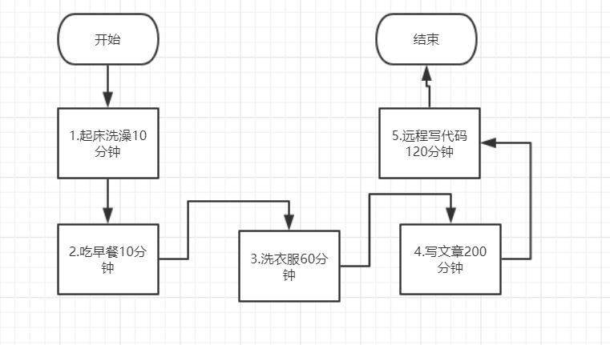
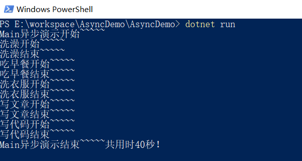
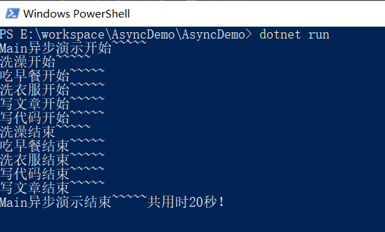
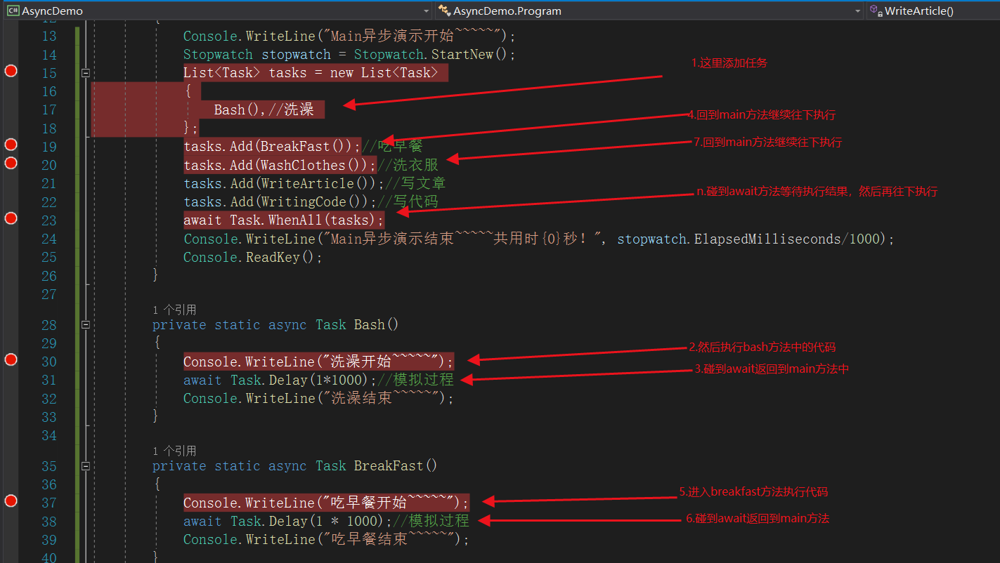

随着.NET Core的流行，相信你现在的代码中或多或少的会用到async以及await吧！毕竟已成标配。那么我们为什么要用async以及await呢？其实这是微软团队为我们提供的一个语法糖，让我们不用996就可以轻松的编写异步代码，并无太过神奇的地方。那么，问题来了，什么是异步？异步到底又是怎样的一个过程呢？
在开始讲异步前我们先从一个生活中的小故事说起吧。话说2019年12月15日周日这一天有位程序猿小祝在这天居然没有加班，选择在家休息了，然后他习惯性的用Microsoft To Do罗列了一下这天要做的事情，如下图所示：
这一天这个程序猿小祝计划早上九点起床洗澡，然后吃早餐，洗衣服，分享一篇关于C#异步相关的文章，晚上在家加下班~~没错，这个苦逼休息的时候也得工作，不然下周的任务有可能完不成要挨批了。
这个时候这个程序猿小祝可以选择，1.起床洗澡，2.吃早餐，3.洗衣服，4.写文章，5.打会球然后“远程写代码”。这个过程有严格的执行顺序，这个过程可以视为一个同步的过程。如下图所示：

当然，这个程序猿小祝却采用了另一种方式来进行：起床后先把衣服换下来用洗衣机洗了，然后开始洗澡，然后吃饭，写了一会文章，然后等衣服洗好后再把衣服给晾好继续回来写文章，最后在晚上的时候远程写代码。在这个过程中这个程序猿在洗衣服的同时就去洗澡，吃饭写了会文章了，这个过程就是一个异步的过程。
可能这个故事比喻的不恰当，不过大伙将就着看下吧，总结一下同步跟异步吧：
下面我们结合伪代码来进行更加详细的讲解吧。
这一节我们就用伪代码来分别实现下同步过程及异步过程吧。
下面我们用伪代码来实现上述故事中的过程吧。
static void Main(string[] args)
{
Console.WriteLine("Main异步演示开始~~~~~");
Stopwatch stopwatch = Stopwatch.StartNew();
Bash();//洗澡
BreakFast();//吃早餐
WashClothes();//洗衣服
WriteArticle();//写文章
WritingCode();//写代码
Console.WriteLine("Main异步演示结束~~~~~共用时{0}秒！", stopwatch.ElapsedMilliseconds/1000);
Console.ReadKey();
}
private static void Bash()
{
Console.WriteLine("洗澡开始~~~~~");
Thread.Sleep(1*1000);//模拟过程
Console.WriteLine("洗澡结束~~~~~");
}
private static void BreakFast()
{
Console.WriteLine("吃早餐开始~~~~~");
Thread.Sleep(1 * 1000);//模拟过程
Console.WriteLine("吃早餐结束~~~~~");
}
private static void WashClothes()
{
Console.WriteLine("洗衣服开始~~~~~");
Thread.Sleep(6 * 1000);//模拟过程
Console.WriteLine("洗衣服结束~~~~~");
}
private static void WriteArticle()
{
Console.WriteLine("写文章开始~~~~~");
Thread.Sleep(20 * 1000);//模拟过程
Console.WriteLine("写文章结束~~~~~");
}
private static void WritingCode()
{
Console.WriteLine("写代码开始~~~~~");
Thread.Sleep(12 * 1000);//模拟过程
Console.WriteLine("写代码结束~~~~~");
}上面的代码没什么难的，写完代码后我们直接dotnet run一下代码，如下图所示：

我们可以看到这个代码的执行过程是严格按照我们编码的顺序执行的，即同步运行的代码。这里用时共40秒！
我们只需要稍微改造下使得代码异步执行再来看下效果吧！伪代码如下：
static async Task Main(string[] args)
{
Console.WriteLine("Main异步演示开始~~~~~");
Stopwatch stopwatch = Stopwatch.StartNew();
List<Task> tasks = new List<Task>
{
Bash(),//洗澡
};
tasks.Add(BreakFast());//吃早餐
tasks.Add(WashClothes());//洗衣服
tasks.Add(WriteArticle());//写文章
tasks.Add(WritingCode());//写代码
await Task.WhenAll(tasks);
Console.WriteLine("Main异步演示结束~~~~~共用时{0}秒！", stopwatch.ElapsedMilliseconds/1000);
Console.ReadKey();
}
private static async Task Bash()
{
Console.WriteLine("洗澡开始~~~~~");
await Task.Delay(1*1000);//模拟过程
Console.WriteLine("洗澡结束~~~~~");
}
private static async Task BreakFast()
{
Console.WriteLine("吃早餐开始~~~~~");
await Task.Delay(1 * 1000);//模拟过程
Console.WriteLine("吃早餐结束~~~~~");
}
private static async Task WashClothes()
{
Console.WriteLine("洗衣服开始~~~~~");
await Task.Delay(6 * 1000);//模拟过程
Console.WriteLine("洗衣服结束~~~~~");
}
private static async Task WriteArticle()
{
Console.WriteLine("写文章开始~~~~~");
await Task.Delay(20 * 1000);//模拟过程
Console.WriteLine("写文章结束~~~~~");
}
private static async Task WritingCode()
{
Console.WriteLine("写代码开始~~~~~");
await Task.Delay(12 * 1000);//模拟过程
Console.WriteLine("写代码结束~~~~~");
}然后我们再直接dotnet run一下代码，如下图所示：

我们可以看到这个代码的执行过程中遇到await后就会返回执行了，待await的代码执行完毕后才继续执行接下来的代码的！为了避免有的读者看不懂，我简单分析其中一个方法的执行过程吧。具体的还需要你自己把异步代码拷贝下来，多打几个断点，然后把等待时间*100（时间长点方便我们查看断点的进入顺序，否则时间短，还没来得及进断点可能代码已经执行完了）看看断点的进入步骤吧！

我也只列了一部分，具体的你们自行打断点看下吧。
通过上面的伪代码分析相信你已经对异步有所了解了。接下来我们就来看看系统到底是怎么实现出这样的效果的。下面只是简单地进行下表述，如果不正确的欢迎大家指正。
编译器在处理异步方法的时候，会构建一种机制，该机制可以启动await 语句所要等候的那项异步任务，并使得程序在该工作完成之后，能够用某个线程继续执行await语句后面的那些代码。这个await语句正是关键所在。编译器会构建相应的数据结构，并把await之后的指令表示成delegate，使得程序在处理完那项异步任务之后，能够继续执行下面的那些指令。编译器会把当前方法中的每一个局部变量的值都保存在这个数据结构中，并根据await语句所要等候的任务来配置相应的逻辑，让程序能够在该任务完成之后指派某个线程，从await语句的下一条指令开始继续执行。实际上，这相当于编译器生成了一个delegate，用以表示await语句之后的那些代码，并写入了相应的状态信息，用以确保await语句所等候的那项任务执行完毕以后这个delegate能够正确的得到调用。
这使得该方法看上去好像是从早前暂停的地方继续往下执行了，也就是所，系统会把状态恢复到早前暂停的样式，并且直接把程序中的某个线程放到适当的语句上，令其能够继续向下运行。
这个过程实际上是由SynchronizationContext类来实现的，该类用来保证异步方法能够在它所等候的任务执行完毕时，从早前停下来的地方继续往下运行，并确保该方法此时所处的环境与上下文能够与当初的情况一样。
通过上面的讲述我们可以知道通过async与await关键字写出来的异步方法并没有太过神奇的地方。只不过编译器会针对这种方法生成许多代码，使得调用这个方法的主调方无需等待该方法完工，就可以继续往下执行，并确保该方法所等候的那项任务在执行过程中发生的错误能够适当的得到回报。这样的好处是，如果异步方法执行到await语句时它所要等候的那项任务还没有完成，那么该方法的执行进度就会暂停在那里，直到那项任务完成之后，才回继续往下执行。
希望这篇文章对你有所帮助，当然光了解异步没用，还要能够高效的编写异步代码才行哦，接下来我会抽时间讲讲进行异步开发的一些建议。当然我以前也写过相关的文章，你可以提前看下。同时欢迎大家加入.net core两千人交流群637326624`交流。当然我不会告诉你，关注公众号会第一时间收到文章推送。
很久没写文章了，生疏了后多，大家将就着看吧！
《More Effective C#》机械工业出版社
依乐祝自己的理解